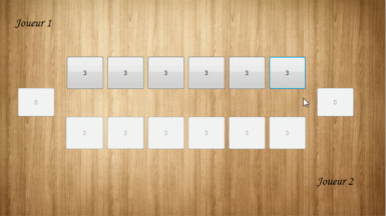

L'acceuil du jeu est représenté comme ceci
Le joueur décide de jouer contre un deuxième joueur ou contre l'ordinateur.
Si le joueur 1 décide de jouer contre le joueur 2, le prgoramme va demander si le joueur 1 joue en premier ou non.
Le joueur 1 prend la main ou laisse la main au joueur 2.
Il existe deux interfaces dans ce jeu :
l'interface bouton ou l'interface label.
Quand le jeu est terminé, le logiciel demande au joueur s'il veut rejouer ou non.
Si le joueur décide de jouer contre l'odrinateur, il a la possibilité de choisir son niveau.
Une fois le niveau choisit, le joueur décide si l'ordinateur joue en premier ou non.
Le joueur sous la forme de bouton.